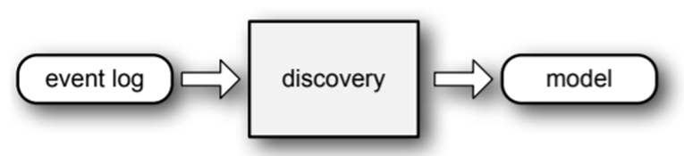
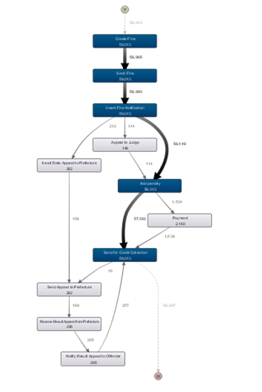
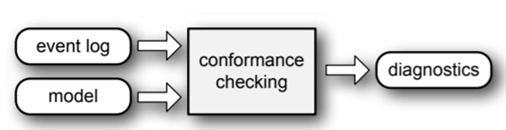
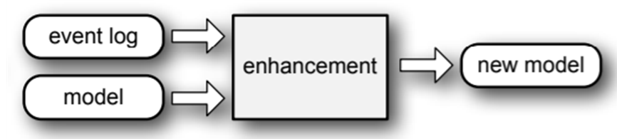

프로세스 마이닝의 종류(유형)
프로세스 마이닝의 종류 (유형)
프로세스 마이닝에는 크게 네 가지 종류가 있다. 프로세스 도출(Process Discovery), 적합도 검사(Conformance Checking), 프로세스 향상(Enhancement)이 바로 그것이다. 이번 포스팅에서는, 이 세 가지 종류에 프로세스 분석 (Process Analysis)를 더하여 네 가지 종류의 프로세스 마이닝에 대해 알아볼 것이다.
Process Discovery (프로세스 도출)

Process Discovery는 event log로부터 model을 도출하는 것이다.
Process Discovery는 프로세스 마이닝에서 가장 중요한 분야로서, 아무런 사전 정보 없이 이벤트 로그로부터 모델을 도출하는 것을 의미한다. 여기서 가장 중요한 것은 아무런 사전 정보 없이이다. 그저 어떤 시스템으로부터 도출되어 저장된 데이터를 이벤트 로그 형태로 가공만 하면, 이로부터 바로 프로세스가 어떻게 흘러갔는지를 이해할 수 있는 것이다. 한 눈에 쉽게 이해할 수 없는 표 혹은 로그 형태로 저장된 데이터를 아래 그림처럼 흐름을 한 눈에 볼 수 있는 형태로 한 번에 바꾸어 준다는 것은 굉장히 놀라운 일이다.

Process Discovery를 통해 도출된 프로세스 모델의 예시
Process Discovery 방법으로는 Alpha Miner, Heuristic Miner, ILP Miner, Inductive Miner 등이 있다. 이에 대해서는 이후 포스팅에서 다룰 것이다.
Conformance Checking (적합도 검사)

Conformance Checking은 event log와 model을 비교하여 이들의 적합성을 진단하는 것이다.
Conformance Checking이란 도출된 모델이 실제 이벤트 로그와 잘 맞는지를 확인하는 것을 말한다. 앞서 말한 Process Discovery를 통해 어떤 이벤트 로그를 바탕으로 하여 하나의 모델이 도출되었을 것이다. 이 모델이 추후에 발생된 다른 데이터 또한 잘 설명할 수 있는지를 확인하는 과정이라고 할 수 있다. 쉽게 말하면, 도출된 모델의 성능을 데이터를 이용해 검사해보는 것이다. 여기에서 모델은 앞서 말한 프로세스 모델이 될 수도 있고, 조직의 구성을 나타내는 Orgnaizational Model, 조직 내부의 관계를 나타내는 Social Network Model 등 모든 종류의 모델이 될 수 있다. Conformance Checking 방법으로는 Causual footprint, Token-Based Replay, Synchronous Product Net 등이 있다. 이 또한 추후 포스팅에서 다루도록 하겠다.
Enhancement (향상)

enhancement는 model을 event log의 정보를 이용하여 더 나은 모델로 만드는 것을 말한다.
Enhancement는 기존에 존재하는 모델을 새로운 이벤트 로그의 정보를 토대로 하여 더 나은 모델 혹은 확장된 모델로 발전시키는 것을 말한다. 여기에서 더 나은 모델은 성능이 발전된 모델 (Conformance가 더 좋은 것 등)을 말하고 확장된 모델은 병목, 빈도, 소요 시간 등 추가적인 정보를 제공하는 모델을 말한다. Conformance checking은 기존 모델의 문제점을 파악하는 것이었다면, enhancement는 기존 모델을 새로운 모델로 발전시키는 것이라고 할 수 있다.
Process Analysis (프로세스 분석)
앞서 말한 세 가지 방법을 통해 모델을 도출하고, 이 모델을 진단하여 더 나은 확장된 모델을 만들었다면 이를 분석하여 어떤 방법으로 프로세스를 발전시킬 수 있는지를 알아 보아야 할 것이다. 모델에는 필요 없는 반복되는 activity가 있을 수도 있고, 특정 activity에서 병목 현상이 일어날 수도 있다. 프로세스를 분석하여 문제점을 발견하고, 이를 개선할 수 있는 방법을 제시하는 모든 과정을 Process Analysis라고 한다.